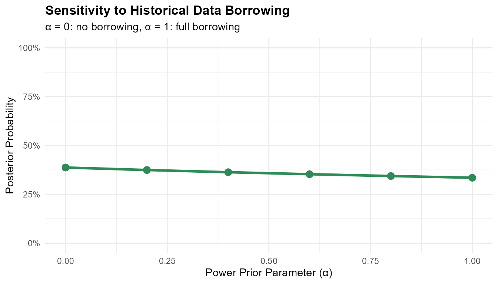

Bayesian Decision Making for Binary Endpoints
Source:vignettes/binary-endpoints.Rmd
binary-endpoints.Rmd
library(BayesianQDM)
library(dplyr)
#>
#> Attaching package: 'dplyr'
#> The following objects are masked from 'package:stats':
#>
#> filter, lag
#> The following objects are masked from 'package:base':
#>
#> intersect, setdiff, setequal, union
library(tidyr)
library(ggplot2)Introduction
The BayesianQDM package provides comprehensive methods for Bayesian quantitative decision-making in clinical trials with binary endpoints. This vignette demonstrates how to use the package for calculating posterior probabilities, posterior predictive probabilities, and Go/NoGo/Gray decision probabilities.
Basic Concepts
Decision Framework
The Bayesian decision-making framework categorizes trial outcomes into three zones:
- Go: Evidence suggests the treatment is effective (proceed to next phase)
- NoGo: Evidence suggests the treatment is not effective (stop development)
- Gray: Evidence is inconclusive (may need additional data)
Basic Usage
Posterior Probability
# Calculate posterior probability for a single trial outcome
posterior_prob <- pPPsinglebinary(
prob = 'posterior',
design = 'controlled',
theta0 = 0.15, # Minimum clinically meaningful difference
n1 = 20, n2 = 20, # Sample sizes
y1 = 12, y2 = 6, # Observed responders
a1 = 0.5, a2 = 0.5, b1 = 0.5, b2 = 0.5, # Beta prior parameters
m1 = NULL, m2 = NULL,
ne1 = NULL, ne2 = NULL, ye1 = NULL, ye2 = NULL, ae1 = NULL, ae2 = NULL
)
cat("Posterior probability that treatment effect > 0.15:", round(posterior_prob, 4))
#> Posterior probability that treatment effect > 0.15: 0.1741Posterior Predictive Probability
# Calculate posterior predictive probability for future trial
predictive_prob <- pPPsinglebinary(
prob = 'predictive',
design = 'controlled',
theta0 = 0.1,
n1 = 20, n2 = 20, # Current trial sample sizes
y1 = 12, y2 = 6, # Current trial outcomes
a1 = 0.5, a2 = 0.5, b1 = 0.5, b2 = 0.5,
m1 = 100, m2 = 100, # Future trial sample sizes
ne1 = NULL, ne2 = NULL, ye1 = NULL, ye2 = NULL, ae1 = NULL, ae2 = NULL
)
cat("Probability of future trial success:", round(predictive_prob, 4))
#> Probability of future trial success: 0.1301Go/NoGo/Gray Decision Making
Operating Characteristics
Evaluate decision probabilities across different true response rates:
# Define true response rates to evaluate
true_rates <- expand.grid(
pi1 = c(0.2, 0.3, 0.4, 0.5, 0.6),
pi2 = 0.2
)
# Calculate Go/NoGo/Gray probabilities
oc_results <- pGNGsinglebinary(
prob = 'posterior',
design = 'controlled',
theta.TV = 0.25, # Target value for Go
theta.MAV = 0.05, # Minimum acceptable value for NoGo
theta.NULL = NULL,
gamma1 = 0.8, # Go threshold
gamma2 = 0.2, # NoGo threshold
pi1 = true_rates$pi1,
pi2 = true_rates$pi2,
n1 = 30, n2 = 30,
a1 = 0.5, a2 = 0.5, b1 = 0.5, b2 = 0.5,
z = NULL, m1 = NULL, m2 = NULL,
ne1 = NULL, ne2 = NULL, ye1 = NULL, ye2 = NULL, ae1 = NULL, ae2 = NULL
)
print(oc_results)
#> pi1 pi2 Go Gray NoGo Miss
#> 1 0.2 0.2 0.0003372479 0.09184133 0.90782142 0
#> 2 0.3 0.2 0.0116417787 0.32750590 0.66085232 0
#> 3 0.4 0.2 0.0957743162 0.57605430 0.32817138 0
#> 4 0.5 0.2 0.3378026160 0.56181307 0.10038431 0
#> 5 0.6 0.2 0.6725094551 0.31034897 0.01714158 0Visualizing Decision Probabilities
# Reshape data for plotting
plot_data <- oc_results %>%
select(pi1, pi2, Go, NoGo, Gray) %>%
pivot_longer(cols = c(Go, NoGo, Gray),
names_to = "Decision",
values_to = "Probability")
# Create visualization
ggplot(plot_data, aes(x = pi1, y = Probability, color = Decision, group = Decision)) +
geom_line(linewidth = 1.2) +
geom_point(size = 3) +
scale_color_manual(
values = c('Go' = '#2E8B57', 'Gray' = '#808080', 'NoGo' = '#DC143C'),
labels = c('Go', 'Gray', 'NoGo')
) +
labs(
title = "Operating Characteristics for Binary Endpoint Trial",
subtitle = "Control response rate = 20%",
x = "True Treatment Response Rate",
y = "Decision Probability",
color = "Decision"
) +
scale_y_continuous(limits = c(0, 1), labels = scales::percent) +
scale_x_continuous(labels = scales::percent) +
theme_minimal() +
theme(
plot.title = element_text(face = "bold", size = 14),
legend.position = "bottom"
)External Control Design
Incorporating Historical Data
# Calculate probability with external control data
external_result <- pPPsinglebinary(
prob = 'posterior',
design = 'external',
theta0 = 0.15,
n1 = 20, n2 = 20, # Current trial
y1 = 12, y2 = 6, # Current outcomes
a1 = 0.5, a2 = 0.5, b1 = 0.5, b2 = 0.5,
m1 = NULL, m2 = NULL,
ne1 = 30, ne2 = 30, # Historical trial sizes
ye1 = 15, ye2 = 8, # Historical outcomes
ae1 = 0.5, ae2 = 0.5 # Power prior parameters (50% borrowing)
)
cat("Posterior probability with external data:", round(external_result, 4))
#> Posterior probability with external data: 0.1533Sensitivity to Historical Data Borrowing
# Test different levels of borrowing
alpha_values <- seq(0, 1, by = 0.2)
borrowing_results <- data.frame(
alpha = alpha_values,
probability = sapply(alpha_values, function(a) {
pPPsinglebinary(
prob = 'posterior', design = 'external', theta0 = 0.15,
n1 = 20, n2 = 20, y1 = 12, y2 = 6,
a1 = 0.5, a2 = 0.5, b1 = 0.5, b2 = 0.5,
m1 = NULL, m2 = NULL,
ne1 = 30, ne2 = 30, ye1 = 15, ye2 = 8,
ae1 = a, ae2 = a
)
})
)
print(borrowing_results)
#> alpha probability
#> 1 0.0 0.1741154
#> 2 0.2 0.1665214
#> 3 0.4 0.1577752
#> 4 0.6 0.1488629
#> 5 0.8 0.1401772
#> 6 1.0 0.1318802
ggplot(borrowing_results, aes(x = alpha, y = probability)) +
geom_line(linewidth = 1.2, color = '#2E8B57') +
geom_point(size = 3, color = '#2E8B57') +
labs(
title = "Sensitivity to Historical Data Borrowing",
x = "Power Prior Parameter (α)",
y = "Posterior Probability",
subtitle = "α = 0: no borrowing, α = 1: full borrowing"
) +
scale_y_continuous(limits = c(0, 1), labels = scales::percent) +
theme_minimal() +
theme(plot.title = element_text(face = "bold"))
Sample Size Considerations
Power Analysis
# Evaluate Go probability across different sample sizes
sample_sizes <- seq(10, 50, by = 10)
power_results <- data.frame(
n = sample_sizes,
go_prob = sapply(sample_sizes, function(n) {
result <- pGNGsinglebinary(
prob = 'posterior', design = 'controlled',
theta.TV = 0.2, theta.MAV = 0.05, theta.NULL = NULL,
gamma1 = 0.8, gamma2 = 0.2,
pi1 = 0.5, pi2 = 0.3, # Assume true effect of 0.2
n1 = n, n2 = n,
a1 = 0.5, a2 = 0.5, b1 = 0.5, b2 = 0.5,
z = NULL, m1 = NULL, m2 = NULL,
ne1 = NULL, ne2 = NULL, ye1 = NULL, ye2 = NULL, ae1 = NULL, ae2 = NULL
)
result$Go[1]
})
)
print(power_results)
#> n go_prob
#> 1 10 0.2447746
#> 2 20 0.2058666
#> 3 30 0.1762386
#> 4 40 0.2079638
#> 5 50 0.1775540
ggplot(power_results, aes(x = n, y = go_prob)) +
geom_line(linewidth = 1.2, color = '#2E8B57') +
geom_point(size = 3, color = '#2E8B57') +
geom_hline(yintercept = 0.8, linetype = "dashed", color = "red") +
annotate("text", x = 45, y = 0.85, label = "Target: 80%", color = "red") +
labs(
title = "Power Analysis: Sample Size vs Go Probability",
x = "Sample Size (per arm)",
y = "Go Probability",
subtitle = "True treatment effect = 20%"
) +
scale_y_continuous(limits = c(0, 1), labels = scales::percent) +
theme_minimal() +
theme(plot.title = element_text(face = "bold"))Practical Guidelines
Threshold Selection
When designing a trial, consider:
- θ_TV (Target Value): Set based on clinically meaningful difference
- θ_MAV (Minimum Acceptable Value): Set based on smallest worthwhile effect
- γ₁ (Go threshold): Typically 0.8-0.9 for high confidence
- γ₂ (NoGo threshold): Typically 0.2-0.3 for early stopping
Summary
This vignette demonstrated:
- Basic probability calculations for binary endpoints
- Go/NoGo/Gray decision framework with customizable thresholds
- Operating characteristics evaluation across scenarios
- External control design with power priors
- Sample size considerations for trial planning
The BayesianQDM package provides flexible tools for evidence-based decision making in clinical trials with binary endpoints.